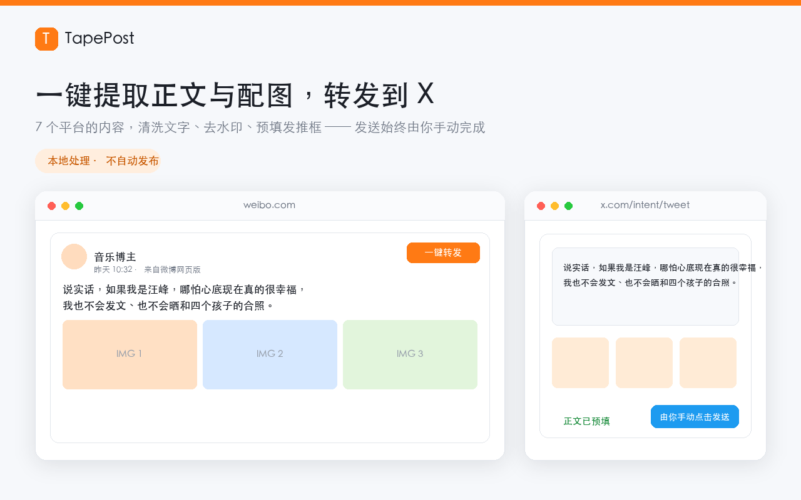
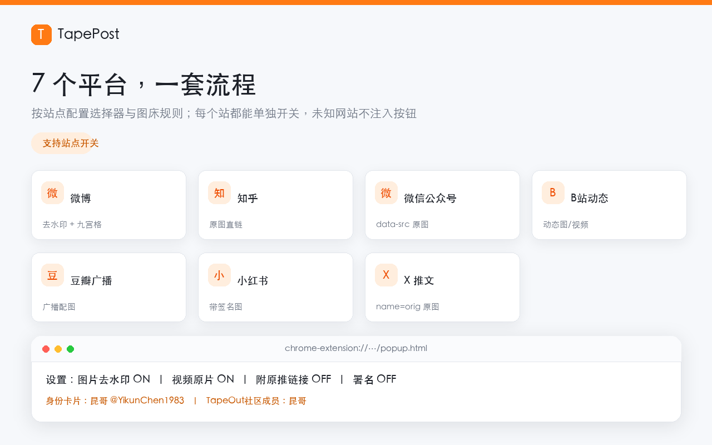
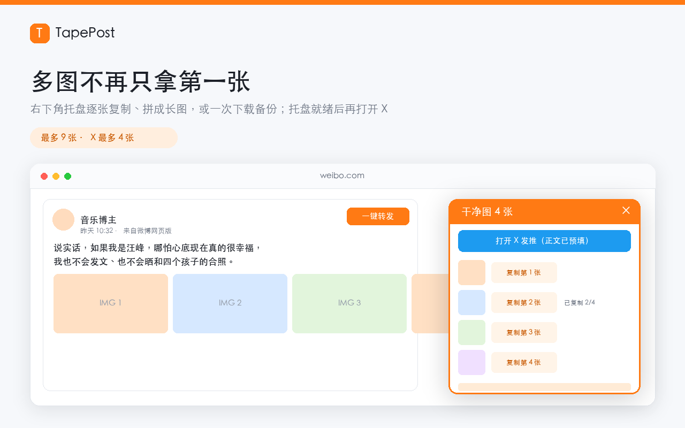

一键转发到 X
AI 评论 · 官方链接防伪
7 个平台的内容清洗文字、去水印、整理成 X 草稿；在 X 上用 Grok 生成 3 条回复候选；生态面板用 295 条导航收录清单分级核验 TapeOut 生态链接。
发布与回复始终由你手动完成 —— 扩展不会替你发任何内容。
Chrome 116+ · Manifest V3 · 无账号 · 无自有服务器 · 转发纯本地 · Grok 可免 API Key 走 X 站内模式

搬运内容最麻烦的几步，一次做完
不接管账号、不自动发文，只把你本来要手动复制粘贴的那几步压缩成一次点击。
只认这一条
按正文锚点定位卡片，剥掉昵称、时间、认证标签和话题尾巴；点击时实时重新解析，滚动后 DOM 复用也不会抓错内容。
配图一张不落
九宫格、多个媒体容器、懒加载属性、CSS 背景图、内联图片数据、X 原图参数，最多 9 张，自动排除头像等干扰图。
本地去水印
Canvas 先真实检测底部白色水印，命中才用包围盒插值与区域重建；没检测到水印的原图保持不动，不会强行抹图。
多图托盘
右下角弹出「干净图 N 张」：逐张复制、拼成一张长图、全部下载。托盘就绪后再打开 X，避免新标签页抢焦点。
文字自动预填
清洗后的正文通过发推意图链接预填到 X；可按需附上原推链接与个人署名，话题尾巴按你的设置处理。
发送由你决定
扩展只写入剪贴板与预填文字，不调用任何发布接口。检查内容、粘贴图片、手动点发送，主动权一直在你手里。
一个按钮，覆盖常看的内容站
每个站点都有独立的选择器、图床域名、防盗链 Referer 与水印策略，可在设置里逐个开关；未知网站不注入任何界面。
不止转发：AI 评论 + 官方链接防伪
三个能力都由你主动点击触发。1.3.0 起 Grok 可以走「X 站内 Grok」模式 —— 不需要 API Key、不调用任何 AI 接口、不产生费用；1.3.1 起评论按钮移到 X 回复填写区右侧，候选可直接写回回复框；1.3.2 起点击后弹出等待浮层，并严格校验「提示词真的发给 Grok、回答真的读回来了」；1.3.3 起重新加载扩展后旧的 X 标签会自动恢复连接，不再报「Receiving end does not exist」。
💬 X 一键评论：3 条候选，你挑一条
先点 X 推文的「回复」展开输入框，紫色「AI 评论」就出现在回复填写区右侧。点击后 Grok 按你设定的提示词，结合该条正文生成 3 条角度不同的回复候选；选中一条会直接写入当前回复框（原本有草稿就追加一行），同时复制一份到剪贴板。最后一步「回复」仍由你手动点，插件不调用任何发布接口。
两套提示词都能在设置里直接改，还能「预览实际发送内容」。默认模型 grok-4.3；没填 Key 时自动切到 X 站内 Grok 模式，不会报错中断。
🛡 TapeOut 生态面板：绿标只给白名单
独立面板内置 295 条 TapeOut.link 生态导航收录 + DeWeb 索引链接，分三档给绿标：5 条项目方官方、56 条导航收录、234 条链上容器已索引。清单是本地静态数据，精确比对域名与路径；网关域名不会通配放行，未索引容器与形近域名拿不到绿标。面板还带链接真伪查询，Grok 按设定提示词给出解释与仿冒风险。
模型不能给钓鱼站发绿标 —— 结论以本地白名单为准，两者冲突时明确标红提示；即使 Grok 不可用，本地判定依然有效。
🪟 免 API Key：直接借 X 站内的 Grok 浮窗 / 对话页
设置里选「自动」或「X 站内 Grok」，插件就把你设定的提示词填进已登录的 x.com/i/grok（或 X 上的 Grok 浮窗），等回答稳定后读回文本、在本机解析成 3 条候选或核验结论。扩展不调用任何 AI 接口、不需要 Key、不产生费用，也不接触 X 登录态；对话本身由 X 提供。
网页版 Grok 会先输出思考过程、也不一定严守 JSON 格式 —— 插件用宽松 JSON 提取跳过噪声，并把「只输出最终 JSON」写进页面模式提示词。提示词可编辑、可预览；X 改版后所有 DOM 选择器都能在设置里改，还有「复制提示词 → 自己粘贴发送 → 读取 Grok 回答」的手动兜底。
⏳ 1.3.2：等待看得见，结果不造假
点「AI 评论」立刻弹出等待浮层：转圈动画、随耗时推进的阶段提示（连接 Grok → 等待回答 → 接近超时）、耗时秒数，直到结果回来或明确报错才关闭。同时修复了网页 Grok 的三处链路问题：提示词只写进输入框、不再把整页文字粘进去；读回时切掉用户提示词与侧栏按钮文字；解析不出 3 条候选就报错，绝不把 History / Usage / Share 这类页面文字伪装成评论。候选面板顶部还会显示「是否真的读到 Grok 回答」。
网页版 Grok 实测会输出不带方括号的 "…", "…", "…" 裸引号列表，1.3.2 也能正确解析成 3 条候选。该版本回归测试 151 个场景，含真机事故回放。
♻️ 1.3.3：连接能自愈，报错说人话
在 chrome://extensions 重新加载扩展后，旧 X 标签里留着失效脚本，页面模式原本会抛 Receiving end does not exist。现在插件自动 刷新旧的 Grok 对话标签，刷新无效就后台新建干净标签；正式发送时标签才失效也会重试。设置里另有「♻️ 重建 Grok 标签」一键修复。
所有连接错误都转成中文可操作指引，不再弹 Chrome 原生英文报错。刷新 / 新建标签是浏览器本地操作，不新增网络请求、不上传任何数据。回归测试 163 个场景，含 12 个失效标签恢复场景。
收录清单是内置静态数据，运行时不联网拉取；API 模式才把文字/链接发给 xAI，页面模式只在 X 站内对话、扩展自身不发 AI 请求。详见隐私政策。
五步，从看到发
整个过程都在你的浏览器和本机完成。
内容右上角出现一枚橙色「一键转发」。
识别这一条的正文，剥离元信息；同时采集全部内容配图。
检测并去除底部白色水印，未命中水印的图原样保留。
多图时右下角弹出托盘：逐张复制、拼长图或全部下载；单图/纯文字会直接打开 X。
正文已预填，粘贴图片并确认后，由你点击发送。


转发纯本地，AI 由你选模式
- 没有自有服务器、没有账号体系、没有统计与遥测
- 「一键转发」的文字提取、去水印、剪贴板与下载全在本机完成
- API 模式：仅在你主动点「AI 评论」/「核验链接」并填了 Key 时，才把文字或链接发给 xAI（或自填网关）
- X 站内 Grok 模式（默认、免 Key）：扩展不向任何 AI 服务发请求，只把提示词填进你已登录的 Grok 页面并读回回答文本；对话由 X 提供并受 X 条款约束
- API Key 只存本机
chrome.storage.local，不同步、不上传给开发者；无远程代码
本地安装（开发者模式）
商店版正在上架流程中；在此之前可以直接从源码加载。
四步开始使用
- 克隆仓库：
git clone https://github.com/kenter1643/TapePost.git - 打开
chrome://extensions，开启右上角「开发者模式」 - 点「加载已解压的扩展程序」，选择仓库根目录
- 打开任一支持的站点，看到橙色「一键转发」即可
不想克隆？直接下载扩展包 v1.3.3，解压后按上面第 2、3 步加载即可（包内即商店提交的 18 个文件）。改过代码后在扩展页点刷新，并刷新来源站页面。设置面板里有「运行环境自检」可排查 Service Worker、DNR 规则与离屏文档状态；要用 AI 评论或链接核验，默认免 Key 走 X 站内 Grok；想用官方 API 才在设置里填 Key。
回归测试
仓库自带 Node 端到端测试，模拟 MV3 消息链路跑完一次转发，另覆盖 295 条收录清单的分级防伪判定与 X 评论按钮注入，共 163 个场景（含回复框按钮注入与候选回写），无需浏览器。
node test-harness.js
WBX_VERBOSE=1 node test-harness.js几个常见疑问
它会自动替我发推或评论吗？
不会。转发只预填文字、把干净图片写入剪贴板或下载到本机；AI 评论只生成 3 条候选并把选中那条写进当前 X 回复框（按钮就在回复填写区右侧）。扩展不调用任何发布接口，最后一步必须你手动点「回复」。
AI 评论和链接核验需要什么？会上传什么？
默认不需要 Key：用「X 站内 Grok」模式，扩展把提示词填进你已登录的 x.com Grok 页面，由 X 完成对话，插件只读回回答文本在本机解析，不向 xAI 发任何请求。若切到 API 模式，才需要你自己的 xAI Key（只存本机），点击时发送推文正文（最多 1200 字符）或待核验链接 + 本地结论、清单摘要与提示词。两种模式都不发送浏览历史、Cookie、登录态、图片文件或其它标签页内容。调用费用只在 API 模式产生。
绿标是怎么判定的？Grok 会不会把假站判成认可？
绿标由扩展内置的 295 条收录清单精确比对得出：5 条项目方官方、56 条导航站编辑收录、234 条链上容器已索引，三档都算导航认可但界面分级显示（链上容器不代表项目方背书）。只有少数独立官网允许同域任意路径，网关域名按精确地址比对。Grok 只负责解释理由和识别形近域名、Punycode、短链等风险；即使模型误判，本地未命中也不会给绿标，界面还会标红提示冲突。
视频能去水印吗？
微博视频会尝试通过公开接口取高清地址；X 视频通常是 HLS / blob 流，暂不能导出干净 mp4。其余站点只能取页面中出现的直链。
为什么有些图片没有变化？
去水印是「先检测、后重建」：只有检测到底部白色水印才处理，检测不到时原图保留，避免把正常图片抹坏。各站水印样式不同，效果会有差异。
小红书图片偶尔下载失败？
它的图片地址带时效签名，过期后刷新来源页面再点一次即可。其它图床的防盗链由扩展自动注入对应 Referer 处理。
转载别人的内容需要注意什么？
内容权利属于原作者，转载或二创前请自行确认授权，建议开启设置里的「附原推链接」标注来源。TapePost 与 X 及上述任何站点均无官方关联。